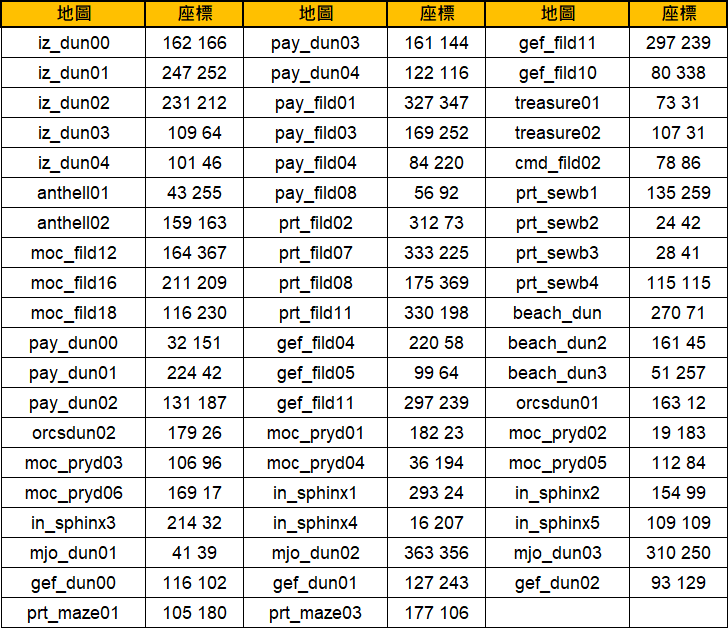

PvP-Karten: Die "Verborgenen Welten" (隱世)
Das offizielle PvP-Karten-System auf TWRoZ — Zutritt via „Schlüssel des Verborgenen", 1.5× Monster-Spawn, +15% EXP/Drop-Buff und Risiko durch Open-PvP.
🗝️ Was sind "Verborgene Welten"?
In Ragnarok Zero gibt es eine Gruppe von Anfängern mit lächelnden Masken, die sich als „Rätselhafte Wegweiser (謎之引路人)" bezeichnen. Sobald sie erkennen, dass du einen „Schlüssel des Verborgenen (隱世之鑰)" besitzt, laden sie dich zu einem Abenteuer in eine parallele PvP-Karten-Version ein.
⚙️ Regeln der Verborgenen Karten
- PvP aktiviert — Alle Spieler außerhalb deiner Party, Gilde oder Allianz gelten als Feinde
- Monster-Dichte: „Anzahl" und „Respawn-Geschwindigkeit" sind 1,5× höher als in der Original-Karte
- Exklusiver Buff: Beim Einsatz des Schlüssels auf der verborgenen Karte erhältst du 12 Stunden lang +15% EXP & +15% Drop-Rate (gilt nur in der verborgenen Karte, verschwindet beim Verlassen)
- Logout-Verhalten: Wer ausloggt oder offline geht, erscheint beim nächsten Login wieder an seinem Charakter-Speicherpunkt (nicht auf der verborgenen Karte!)
- Täglicher Reset: Um 00:00 Uhr werden alle verborgenen Karten geleert und alle Abenteurer auf ihre ursprünglichen Channels zurückgesetzt
📸 Die "Rätselhaften Wegweiser" finden
Die NPCs erscheinen auf verschiedenen Farm-Maps. Zum Auffinden:
- Nutze die In-Game-Navigation und suche nach dem Schlüsselwort
謎之引路人(auf Global wahrscheinlich anderer Name — z.B. „Enigmatic Guide" oder „Rätselhafter Wegweiser")

Diese Tabelle listet verschiedene Karten innerhalb von Ragnarok Zero sowie deren spezifische Koordinaten auf.
| Karte | Koordinaten | Karte | Koordinaten | Karte | Koordinaten |
|---|---|---|---|---|---|
| iz_dun00 | 162 166 | pay_dun03 | 161 144 | gef_fild11 | 297 239 |
| iz_dun01 | 247 252 | pay_dun04 | 122 116 | gef_fild10 | 80 338 |
| iz_dun02 | 231 212 | pay_fild01 | 327 347 | treasure01 | 73 31 |
| iz_dun03 | 109 64 | pay_fild03 | 169 252 | treasure02 | 107 31 |
| iz_dun04 | 101 46 | pay_fild04 | 84 220 | cmd_fild02 | 78 86 |
| anthell01 | 43 255 | pay_fild08 | 56 92 | prt_sewb1 | 135 259 |
| anthell02 | 159 163 | prt_fild02 | 312 73 | prt_sewb2 | 24 42 |
| moc_fild12 | 164 367 | prt_fild07 | 333 225 | prt_sewb3 | 28 41 |
| moc_fild16 | 211 209 | prt_fild08 | 175 369 | prt_sewb4 | 115 115 |
| moc_fild18 | 116 230 | prt_fild11 | 330 198 | beach_dun | 270 71 |
| pay_dun00 | 32 151 | gef_fild04 | 220 58 | beach_dun2 | 161 45 |
| pay_dun01 | 224 42 | gef_fild05 | 99 64 | beach_dun3 | 51 257 |
| pay_dun02 | 131 187 | gef_fild11 | 297 239 | orcsdun01 | 163 12 |
| orcsdun02 | 179 26 | moc_pryd01 | 182 23 | moc_pryd02 | 19 183 |
| moc_pryd03 | 106 96 | moc_pryd04 | 36 194 | moc_pryd05 | 112 84 |
| moc_pryd06 | 169 17 | in_sphinx1 | 293 24 | in_sphinx2 | 154 99 |
| in_sphinx3 | 214 32 | in_sphinx4 | 16 207 | in_sphinx5 | 109 109 |
| mjo_dun01 | 41 39 | mjo_dun02 | 363 356 | mjo_dun03 | 310 250 |
| gef_dun00 | 116 102 | gef_dun01 | 127 243 | gef_dun02 | 93 129 |
| prt_maze01 | 105 180 | prt_maze03 | 177 106 |
Die Tabelle listet in-game Kartenstandorte und ihre zugehörigen Koordinaten für Navigationszwecke auf.
🎯 Strategie-Empfehlungen
🟢 Für Solo-Farmer
Der +15% EXP/Drop-Buff ist stark, aber 1,5× Monster-Dichte + PvP-Risiko bedeutet: nur lohnend, wenn du Top-Gear + Auto-Hunt-Sustain hast, oder einen schnell entkommenden Build (Hunter, Assassin).
Empfehlung: niedrig-traffickierte Maps bevorzugen, Prime-Time meiden.
🟣 Für Gruppen/Gilden
Ideal mit Party oder Gilde — Mitglieder sind als Freunde markiert, PvP-Gefahr kommt nur von Außenstehenden. Ein Priest + DPS-Team kann den erhöhten Spawn effizient abbauen.
Abbrechen + Rückkehr über Save-Point bei Wipe.
🔴 Achtung: PvP-Hotspots
Gleiche „Rätselhafte Wegweiser"-NPCs werden von Gilden als Ambush-Spots genutzt. Einlog-Position beachten — logge dich NICHT in der verborgenen Karte aus, wenn andere Spieler auf dich warten.